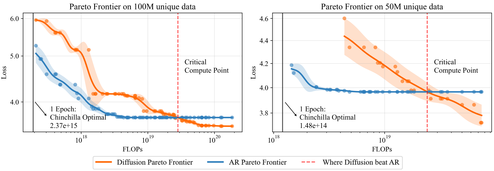
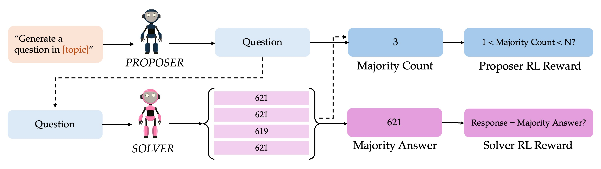
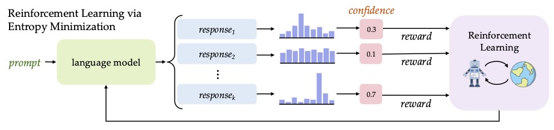
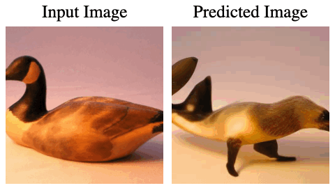
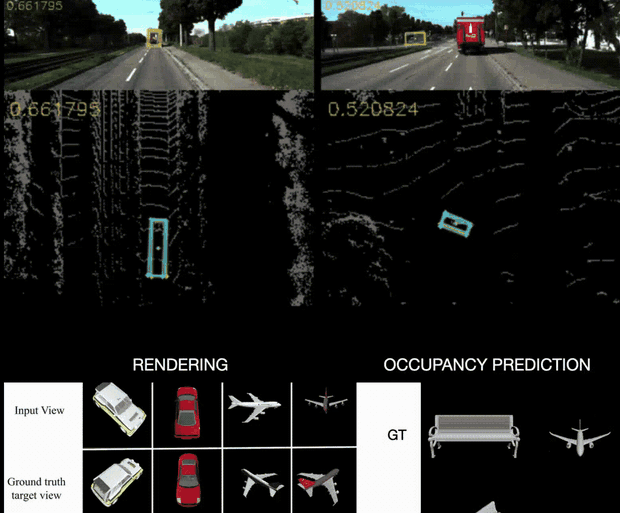
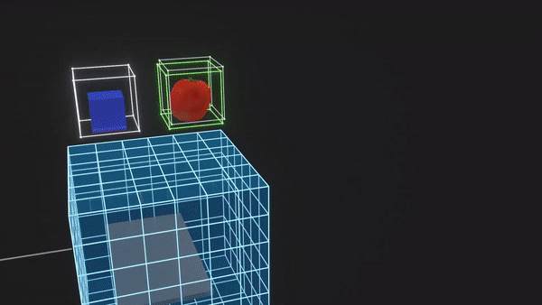
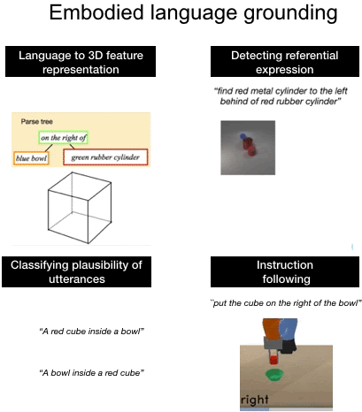

Research
I'm interested in representation learning and generalization in deep learning.
Some of my favorite papers are highlighted.
-

Diffusion Beats Autoregressive in Data-Constrained SettingsMihir Prabhudesai*, Mengning Wu*, Amir Zadeh, Katerina Fragkiadaki, Deepak PathakarXiv -

Self-Questioning Language ModelsLili Chen, Mihir Prabhudesai, Katerina Fragkiadaki, Hao Liu, Deepak PathakarXiv -

Maximizing Confidence Alone Improves ReasoningMihir Prabhudesai*, Lili Chen*, Alex Ippoliti*, Katerina Fragkiadaki, Hao Liu, Deepak PathakarXiv -
Unified Multimodal Discrete DiffusionAlexander Swerdlow*, Mihir Prabhudesai*, Siddharth Gandhi, Deepak Pathak, Katerina FragkiadakiarXiv
-
Video Diffusion Alignment via Reward GradientMihir Prabhudesai*, Russell Mendonca*, Zheyang Qin*, Katerina Fragkiadaki, Deepak PathakarXiv
-
Aligning Text-to-Image Diffusion Models with Reward BackpropagationMihir Prabhudesai, Anirudh Goyal, Deepak Pathak, Katerina FragkiadakiarXiv
-

Diffusion-TTA: Test-time Adaptation of Discriminative Models via Generative FeedbackMihir Prabhudesai*, Tsung-Wei Ke*, Alexander Cong Li, Deepak Pathak, Katerina FragkiadakiNeurIPS 2023 -
 Your diffusion model is secretly a zero-shot classifierAlexander C. Li, Mihir Prabhudesai, Shivam Duggal, Ellis Brown, Deepak PathakICCV 2023
Your diffusion model is secretly a zero-shot classifierAlexander C. Li, Mihir Prabhudesai, Shivam Duggal, Ellis Brown, Deepak PathakICCV 2023 -
 Test-time Adaptation with Slot-Centric ModelsMihir Prabhudesai, Anirudh Goyal, Sujoy Paul, Sjoerd Steenkiste, Mehdi Sajjadi, Gaurav Aggarwal, Thomas Kipf, Deepak Pathak, Katerina FragkiadakiICML 2023
Test-time Adaptation with Slot-Centric ModelsMihir Prabhudesai, Anirudh Goyal, Sujoy Paul, Sjoerd Steenkiste, Mehdi Sajjadi, Gaurav Aggarwal, Thomas Kipf, Deepak Pathak, Katerina FragkiadakiICML 2023 -

CoCoNets: Continuous contrastive 3D scene representationsShamit Lal*, Mihir Prabhudesai*, Ishita Mediratta, Adam W Harley, Katerina FragkiadakiCVPR 2021 -

Disentangling 3d prototypical networks for few-shot concept learningMihir Prabhudesai, Shamit Lal*, Darshan Patil*, Hsiao-Yu Tung, Adam W Harley, Katerina FragkiadakiICLR 2021 -
3d-oes: Viewpoint-invariant object-factorized environment simulatorsHsiao-Yu Fish Tung*, Zhou Xian*, Mihir Prabhudesai, Shamit Lal, Katerina FragkiadakiCoRL 2020
-

Embodied language grounding with implicit 3d visual feature representationsMihir Prabhudesai, Hsiao-Yu Fish Tung, Syed Ashar Javed, Maximilian Sieb, Adam W Harley, Katerina FragkiadakiCVPR 2020